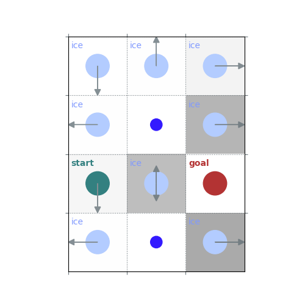

Note
Go to the end to download the full example code.
Practical 4: DynamicProgramming
# # Practical 4: DynamicProgramming
import numpy as np
import rldurham as rld
# ## Frozen Lake Environment
env = rld.make(
'FrozenLake-v1', # small version
# 'FrozenLake8x8-v1', # larger version
# desc=["GFFS", "FHFH", "FFFH", "HFFG"], # custom map
render_mode="rgb_array", # for rendering as image/video
is_slippery=False, # warning: slippery=True results in complex dynamics
)
rld.env_info(env, print_out=True)
rld.seed_everything(42, env)
LEFT, DOWN, RIGHT, UP = 0, 1, 2, 3
actions are discrete with 4 dimensions/#actions
observations are discrete with 16 dimensions/#observations
maximum timesteps is: 100
# render the environment (requires render_mode="rgb_array")
rld.render(env)

# helper function that can also plot policies and value functions
rld.plot_frozenlake(env=env,
v=np.random.uniform(0, 1, 16),
policy=np.random.uniform(0, 1, (16, 4)),
draw_vals=True)

def uniform_policy(env):
return np.ones((env.observation_space.n, env.action_space.n)) / env.action_space.n
rld.plot_frozenlake(env=env, policy=uniform_policy(env))
# ## Policy Evaluation
def policy_eval_step(env, policy, gamma, v_init=None):
if v_init is None:
v_init = np.zeros(env.observation_space.n)
v = np.zeros(env.observation_space.n)
for s_from in range(env.observation_space.n):
for a in range(env.action_space.n):
pi = policy[s_from, a]
for p, s_to, r, done in env.P[s_from][a]:
v[s_from] += pi * p * (r + gamma * v_init[s_to])
return v
v = np.zeros(env.observation_space.n)
v = policy_eval_step(env, uniform_policy(env), 1, v)
rld.plot_frozenlake(env, v, uniform_policy(env), draw_vals=True)

def policy_eval_step_inplace(env, policy, gamma, v_init=None):
if v_init is None:
v_init = np.zeros(env.observation_space.n)
v = v_init.copy() # opearate on copy in-place
for s_from in reversed(range(env.observation_space.n)): # reverse order of states
v_s_from = 0 # compute value for this state
for a in range(env.action_space.n):
pi = policy[s_from, a]
for p, s_to, r, done in env.P[s_from][a]:
v_s_from += pi * p * (r + gamma * v[s_to]) # use the values we also update
v[s_from] = v_s_from # update
return v
v = np.zeros(env.observation_space.n)
v = policy_eval_step_inplace(env, uniform_policy(env), 1, v)
rld.plot_frozenlake(env, v, uniform_policy(env), draw_vals=True)

def policy_evaluation(env, policy, gamma, v_init=None, print_iter=False, atol=1e-8, max_iter=10**10):
if v_init is None:
v_init = np.zeros(env.observation_space.n)
v = v_init
for i in range(1, max_iter + 1):
new_v = policy_eval_step(env, policy, gamma, v)
# new_v = policy_eval_step_inplace(env, policy, gamma, v)
if np.allclose(v, new_v, atol=atol):
break
v = new_v
if print_iter:
print(f"{i} iterations")
return v
v = policy_evaluation(env, uniform_policy(env), 1, print_iter=True)
rld.plot_frozenlake(env, v, uniform_policy(env), draw_vals=True)
# ## Policy Improvement

60 iterations
def q_from_v(env, v, s, gamma):
q = np.zeros(env.action_space.n)
for a in range(env.action_space.n):
for p, s_to, r, done in env.P[s][a]:
q[a] += p * (r + gamma * v[s_to])
return q
def policy_improvement(env, v, gamma, deterministic=False):
policy = np.zeros([env.observation_space.n, env.action_space.n]) / env.action_space.n
for s in range(env.observation_space.n):
q = q_from_v(env, v, s, gamma)
if deterministic:
# deterministic policy
policy[s][np.argmax(q)] = 1
else:
# stochastic policy with equal probability on maximizing actions
best_a = np.argwhere(q==np.max(q)).flatten()
policy[s, best_a] = 1 / len(best_a)
return policy
env = rld.make('FrozenLake8x8-v1', is_slippery=False)
rld.seed_everything(42, env)
gamma = 1
policy = uniform_policy(env)
v = policy_evaluation(env, policy, gamma=gamma)
rld.plot_frozenlake(env, v=v, policy=policy, draw_vals=True)

policy = policy_improvement(env, v, gamma=gamma)
rld.plot_frozenlake(env, v=v, policy=policy, draw_vals=True)
# ## Policy Iteration

env = rld.make('FrozenLake8x8-v1', is_slippery=False)
rld.seed_everything(42, env)
policy = uniform_policy(env)
gamma = 1
v = policy_evaluation(env, policy, gamma=gamma)
rld.plot_frozenlake(env, v=v, policy=policy, draw_vals=True)
print(v)
policy = policy_improvement(env, v, gamma=gamma)
rld.plot_frozenlake(env, v=v, policy=policy, draw_vals=True)

[1.90305548e-03 2.16927106e-03 2.81470378e-03 4.12015600e-03
6.54735001e-03 9.80286246e-03 1.34473983e-02 1.59696876e-02
1.63695191e-03 1.79015872e-03 2.15477757e-03 2.99849785e-03
5.71911640e-03 9.41393023e-03 1.45697438e-02 1.84920808e-02
1.21774169e-03 1.19972568e-03 1.01582543e-03 0.00000000e+00
3.91675258e-03 7.56407249e-03 1.69256504e-02 2.49369022e-02
8.16627609e-04 7.75246174e-04 7.08844457e-04 7.73171495e-04
2.38385304e-03 0.00000000e+00 2.06319427e-02 3.93930442e-02
4.56952350e-04 3.75834825e-04 2.71166118e-04 0.00000000e+00
4.84550082e-03 1.15941715e-02 2.62091075e-02 7.26103323e-02
1.78428991e-04 0.00000000e+00 0.00000000e+00 1.44835445e-03
5.40398429e-03 1.53220842e-02 0.00000000e+00 1.52228870e-01
7.83491898e-05 0.00000000e+00 1.09382492e-04 3.89434175e-04
0.00000000e+00 4.42901833e-02 0.00000000e+00 3.84076289e-01
5.66254312e-05 3.49065027e-05 4.80960655e-05 0.00000000e+00
5.39462166e-02 1.61838650e-01 3.87279550e-01 0.00000000e+00]
env = rld.make(
'FrozenLake-v1',
desc=[
"FFF",
"FHF",
"SFG",
"FHF",
],
is_slippery=True,
render_mode='rgb_array',
)
rld.seed_everything(42, env)
rld.render(env)
# `gamma = 1`: Preference for longer but low-risk paths
gamma = 1
policy = uniform_policy(env)
for _ in range(10):
v = policy_evaluation(env, policy, gamma=gamma)
policy = policy_improvement(env, v, gamma=gamma)
rld.plot_frozenlake(env, v=v, policy=policy, draw_vals=False, clear=True)
# `gamma < 1`: Preference for shorter but potentially riskier paths


gamma = 0.5
policy = uniform_policy(env)
for _ in range(10):
v = policy_evaluation(env, policy, gamma=gamma)
policy = policy_improvement(env, v, gamma=gamma)
rld.plot_frozenlake(env, v=v, policy=policy, draw_vals=False, clear=True)
- 


Total running time of the script: (0 minutes 4.255 seconds)